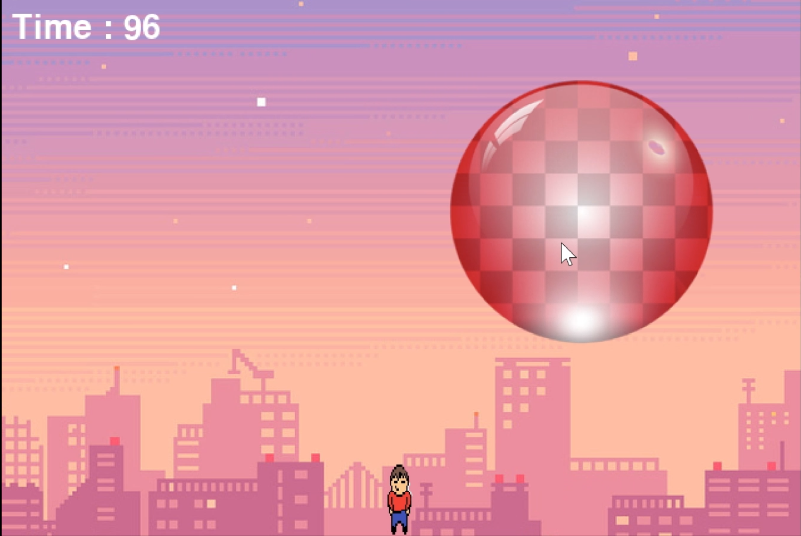
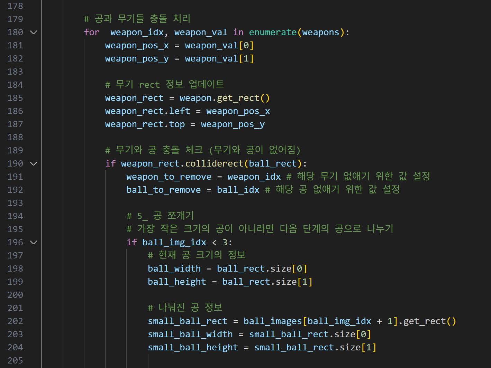
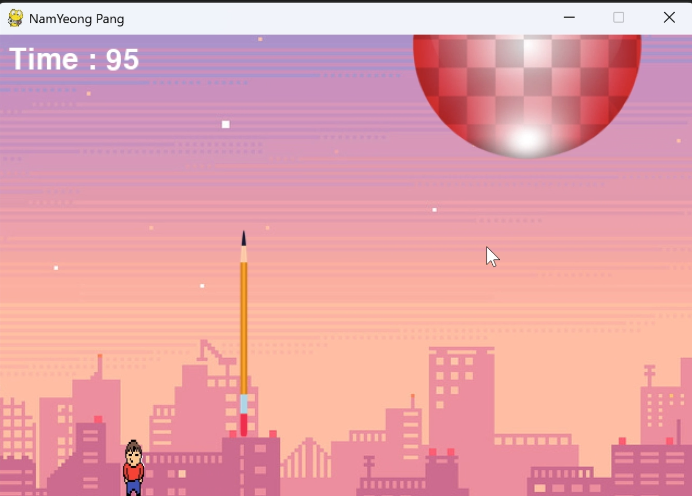
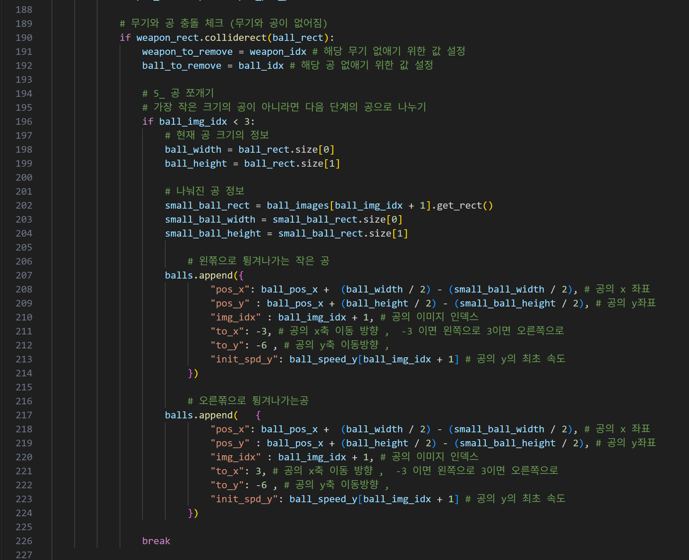
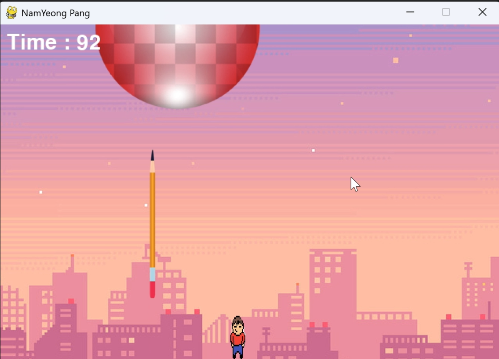
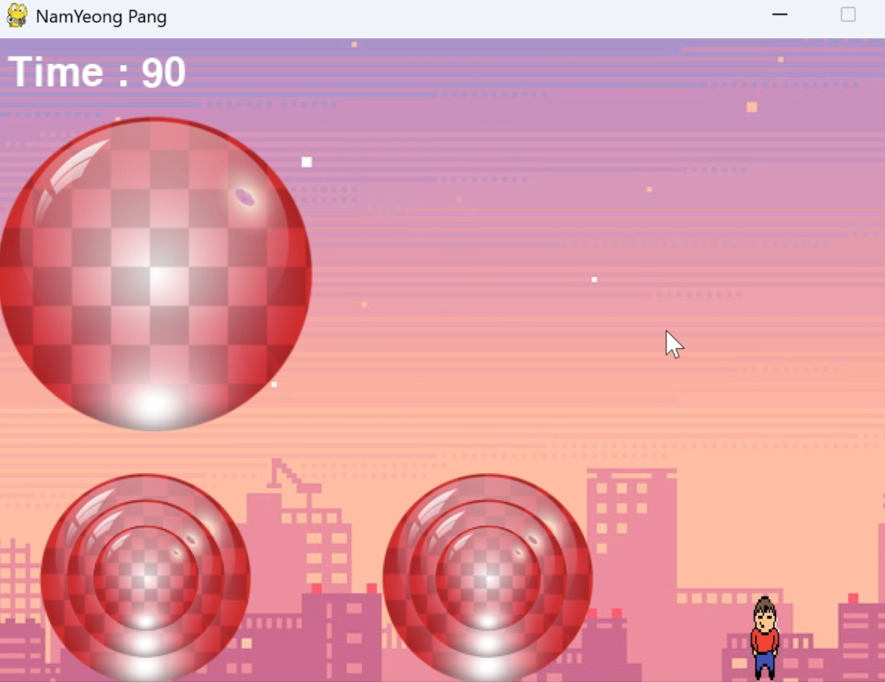

Pang Game! (1학년)
프로젝트 개요
첫 게임 프로그래밍대학교 입학 후 첫 게임 프로그래밍 수업에서 "아무거나 만들어봐라"라는 교수님 말씀에 무작정 시도. 학교 도서관과 유튜브(나도 코딩) 참고하여 제작.
아무런 기초 지식 없이 시작한 첫 프로젝트로, 게임 프로그래밍의 기본 구조(입력 → 업데이트 → 렌더링)를 체험했습니다.
플레이어 & 투사체
키 입력 / 좌표 이동플레이어는 마우스 입력으로 x좌표를 변화시켜 이동. Space키로 투사체(연필)를 생성하고 매 틱 x, y좌표를 업데이트하여 위로 발사.




충돌 판정 및 공 분리
중심점 / 영역 판정공의 가로/세로 절반으로 중심점 설정. 투사체가 중심점 기준 가로 절반 영역 안에 들어오면 충돌로 판정. 충돌 시 공을 여러 개로 분리.
별도의 충돌 라이브러리 없이 직접 좌표 기반 충돌 판정을 구현하여, 2D 게임의 기본적인 물리 처리 원리를 학습했습니다.


